Start with expressions and types
An expression computes a value. In OCaml, if, function application, and local let bindings are expressions too. A type describes the kind of result and constrains how it may be used. The compiler checks those constraints before evaluation.
let adjustment n =
let delta = if n < 0 then -1 else 1 in
n + delta
Both branches of if have type int, so delta is an integer. The whole function has type int -> int. A function returning an integer in one branch and a string in the other does not receive a union type automatically.
Bindings are not assignments
let x = e1 in e2 computes e1, introduces a name for the resulting value, and evaluates e2 in the extended scope. A later let x = ... shadows an earlier binding. It does not mutate the earlier value.
let answer =
let x = 7 in
let y = x + 1 in
let x = 100 in
x + y
y remains 8; the answer is 108. This is the same binding discipline you will implement in HW2.
Read function types with parentheses
The arrow associates to the right: int -> int -> int means int -> (int -> int). Function application associates to the left: f x y means (f x) y.
let add x y = x + y
let add_seven = add 7
let add_pair (x, y) = x + y
add is curried: it takes an integer and returns a function. add_pair accepts one argument that is a pair. Their types and calls are different. Partial application works naturally for add because a function is a value.

View Mermaid source
flowchart TD
accTitle: A step-by-step reasoning flow
accDescr: Each arrow passes the result of one reasoning step to the next.
N0["add<br/>int → (int → int)"]
N1["add 7<br/>int → int; remembers the first argument"]
N0 --> N1
N2["add 7 4<br/>int; produces 11"]
N1 --> N2
Pattern matching follows data construction
An OCaml list is either [] or head :: tail. The tail is itself a list. Pattern matching exposes exactly that structure.
let describe xs =
match xs with
| [] -> "empty"
| [_] -> "one element"
| _ :: _ :: _ -> "at least two elements"
The final wildcard is the remaining list, not necessarily one element. Patterns are tried in order. An earlier catch-all would make later cases unreachable.
| Syntax | Meaning | Typical mistake |
|---|---|---|
[a; b] |
A list containing two elements | Using commas, which construct a pair |
(a, b) |
One pair | Passing it to a curried function |
x :: xs |
An element followed by a list | Giving another element as the tail |
xs @ ys |
Concatenation of two lists | Assuming it is constant time |
= |
Structural equality where supported | Using physical equality as a general replacement |
'a |
A type variable | Treating it as a runtime variable |
Invent the representation before the algorithm
type measurement =
| Exact of int
| Between of int * int
| Missing
let lower_bound = function
| Exact n -> Some n
| Between (lo, _) -> Some lo
| Missing -> None
The option return type makes absence explicit. This is a useful teaching design, but preserve the exact return type required by homework. For example, HW1 max returns int, not int option; its PDF leaves the empty-list policy unstated.
The homework connection
HW1 asks you to recognize int, polymorphic lists, curried functions, tuples, and mutually defined datatypes. P8 depends on treating functions as values. P12 has two expression categories: formulas return booleans while arithmetic expressions return integers. Two mutually recursive helpers respect those different result types.
Do not use OCaml’s convenient built-in equality to silently define your interpreted language’s equality. HW2 only specifies equality on integer pairs and boolean pairs. OCaml’s host capabilities do not expand ML−’s language rules.
Check your understanding
What is the type of fun f -> fun x -> f x, and what relationship does it impose between f and x?
Reveal the reasoning
Its type is ('a -> 'b) -> 'a -> 'b. Whatever type x has must be f’s input type, and the whole application returns f’s output type. No arithmetic or other operation forces a concrete base type.
Read alongside: lecture 3, pp. 8–44, English book, §2.1.